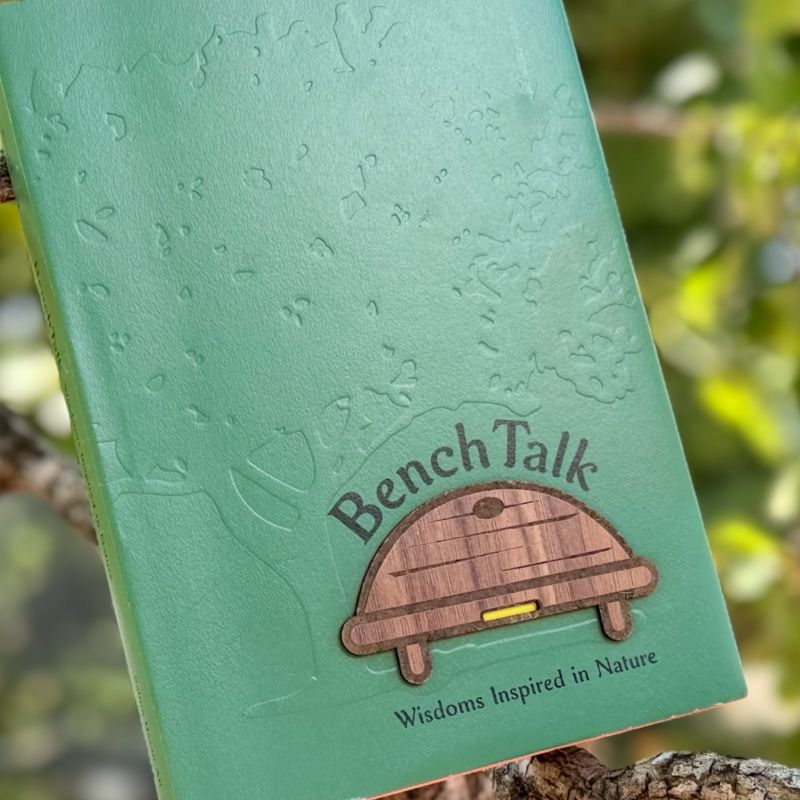
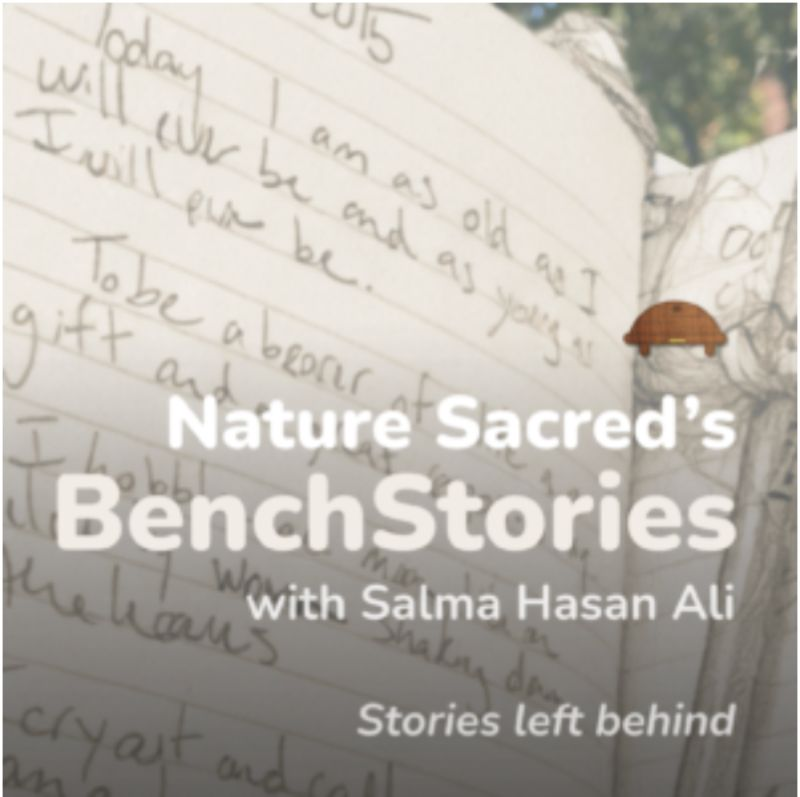
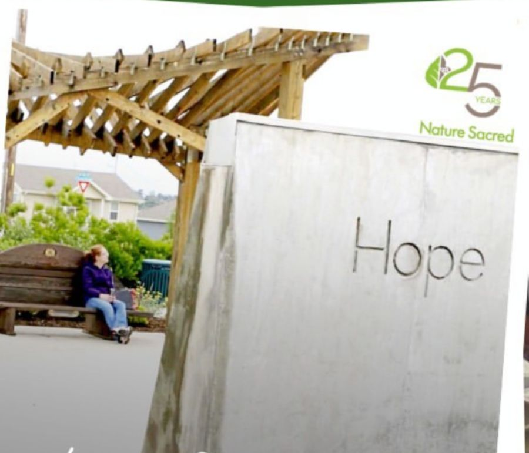
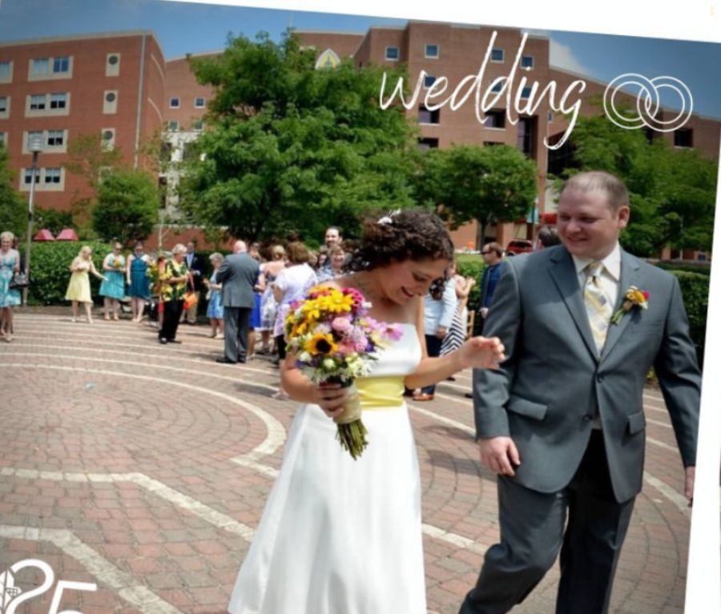
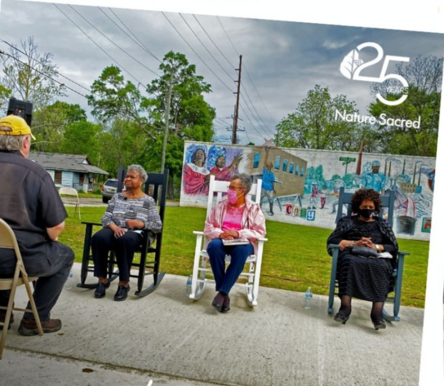

The bench, and the journal.
What happens when we pause, if only for a moment, in nature? Every journal entry is a snapshot of that moment; a record of what's stirring within us. At the heart of every Sacred Place: a handcrafted wooden bench, and a place to leave your thoughts.
Not just any bench.
One designed with intent. Its curved back and soft lines invite you to sit and stay a while, and a special pocket built beneath the seat holds a waterproof journal. So the bench isn't only a place to rest. It's a place to be heard.
Every part of it is shaped with the visitor in mind. It's meant to welcome, offer solace, or companionship, and make room for reflection.
Since the very first Sacred Place, every one that has come to be has included the Nature Sacred Bench and Journal.
"Life is hard today. Thanks for being here, bench."

Every bench carries a story.Crafted with care. Crafted by hand. For every community.
Tucked beneath the bench is a Little Yellow Journal—waterproof, blank, anonymous. Since 1996, people have been writing in them, leaving entries that range from the profound to the whimsical.
We've always considered these entries some of the most powerful evidence of nature's power to touch us, move us, and let us connect more deeply with ourselves and those around us.
The archiveOnce a journal is filled, Firesouls are invited to mail them back to us. We archive every page, then send a fresh journal back—ready to be filled again.

BenchTalk: Wisdoms Inspired in Nature
Hundreds of entries gathered from the Little Yellow Journals and curated in one volume.
Buy the book →
BenchStories, read aloud
A few minutes of entries in the voices of the people who came to sit—the shortest way to hear what a bench holds.
Listen to the podlet →This bench changed my life.
Vignettes from Sacred Places across the country—a wedding, a memorial, a first sober week, a last quiet afternoon.

A keeper of what was lost
An EF5 tornado took 161 lives in thirty-eight minutes. Firesoul Chris Cotten was there in the rubble, and was certain even then that part of the recovery lay in nature. The bench placed on the storm’s path became where the community recorded what it remembered.

Married on the labyrinth
Nicole spent her workday breaks on the bench, then weekends too—a peaceful meditative space in the city, as she put it. When she and her partner decided to marry, they gathered a small group on the labyrinth. Her mother and grandmother left notes in the yellow journal.
Nature carries on. Some believe it’s this simple truth that draws people who know they are at the end of their lives to it.
Eric’s hours in the garden
Being treated for stage four cancer nearby, Eric came to the meditation garden at the American Visionary Art Museum and sat on the bench for hours at a time. Until one day he didn’t. His family called the Firesoul afterward, to say what the place had meant in his final days.

Where elders tell it themselves
At the entrance to 15th Street—once a “City within a City” and now part of the Anniston Civil Rights Trail—Firesoul Steven Folks invited community elders to gather and record their own histories. Visitors still pause on the bench to leave their reactions.